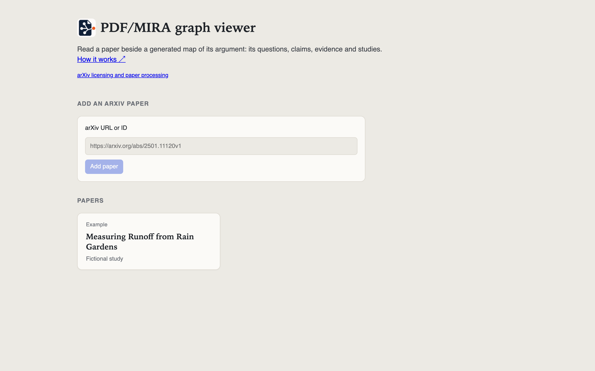
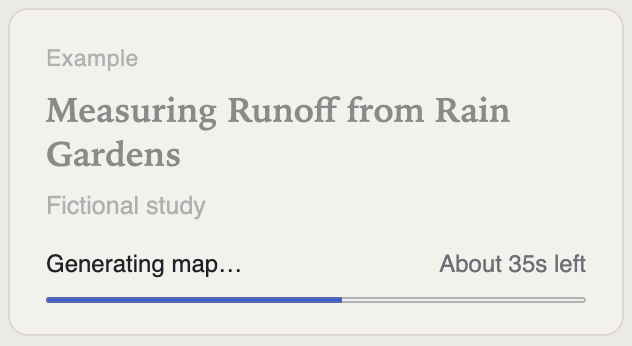
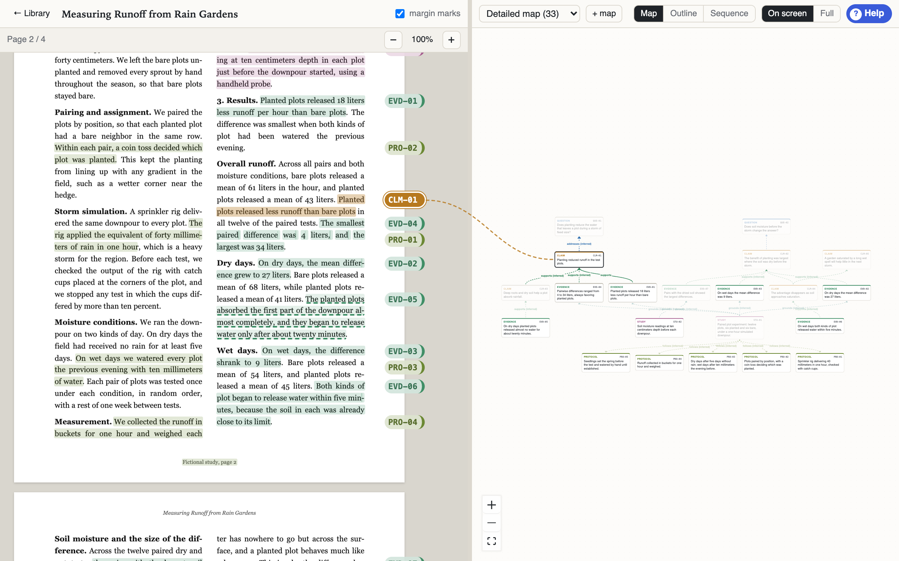
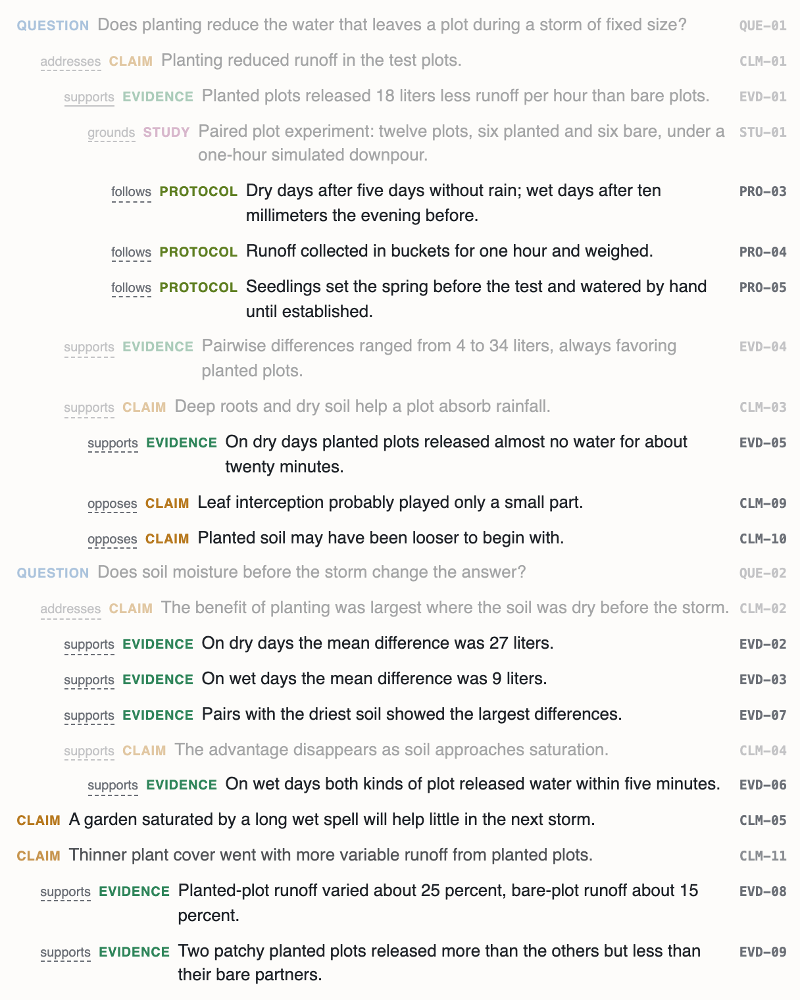
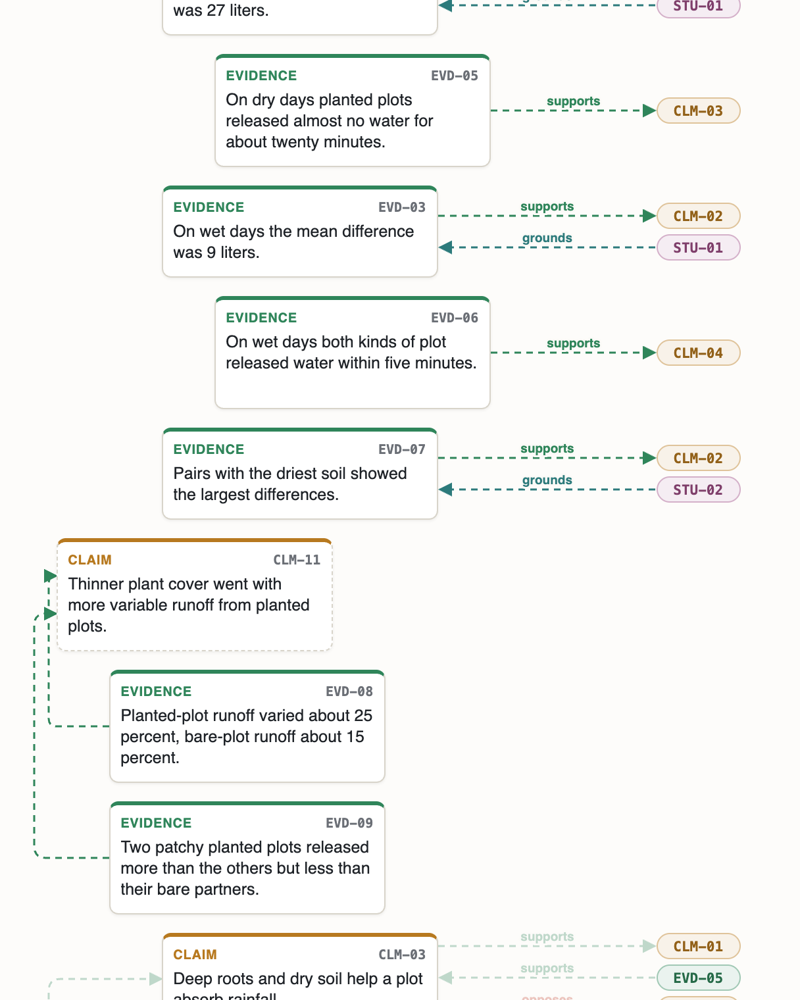
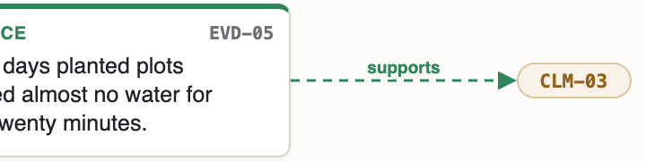
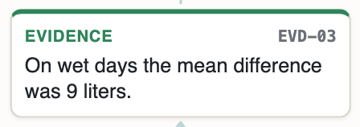
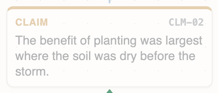
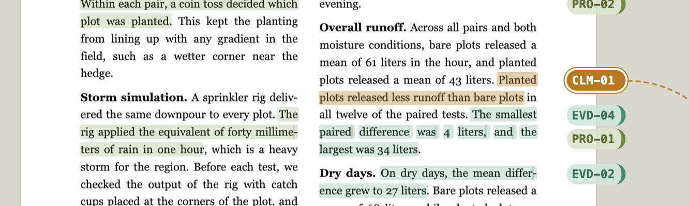
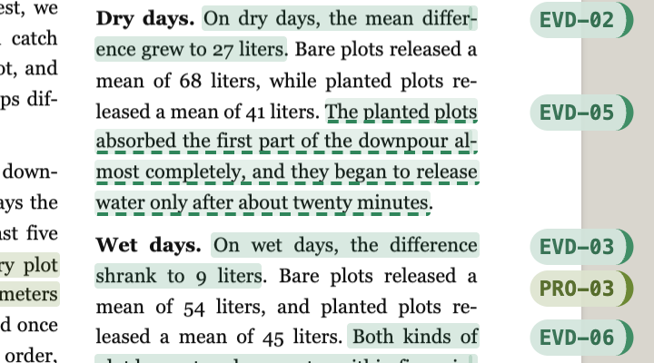

PDF/MIRA graph viewer
Read a research paper beside a map of its argument, to see how the parts fit together as you go.
What this is
A generated map of the paper's argument breaks it into short records: the questions the paper asks, the claims it makes, and the evidence and studies behind them. Arrows show how the records connect. For example, evidence supports a claim, and a claim addresses a question.
Add an arXiv paper and the server runs MIRA-extraction to create its default MIRA map. The map offers one reading of the paper’s arguments, with examples, methods, and sources that help explain them. Longer papers generally get more cards. It opens beside the paper it came from. Where a record has a passage that can be found in the PDF, you can return to the authors’ words. Missing passages and estimated locations are marked.
Use this app to:
- Read with the map. As you scroll the paper, the map shows the records from the part you are reading, and where they fit in the whole argument.
- Follow a thread. Click a record to find its passage in the paper and see what it connects to.
The reader only shows the map; it doesn't change it.
Imported PDFs open directly from arXiv. Generated maps are shared in the Library. Additional maps you load with + map stay in your browser.
Private access
On the invite page, you can preview the reader. Open the link from your invitation to enter. If Request access is available, select it to ask for an invite. If you need a new link, ask the person who shared it.
The site records visits and API activity under the invite name. If Feedback appears in the footer of the invite page or the Library, select it to email the site operator.
Getting started
The Library opens first. You can open an example as soon as the app starts. Look for the folded page and graph icon beside PDF/MIRA graph viewer and in your browser tab.
- In the Library, enter an arXiv URL or ID. Include the version in the ID to import a specific version. If you omit it, the server uses the current version.
- The paper appears after its metadata is resolved. Its card shows each step as the server fetches the text and generates the default map. No map file or model settings are needed for import. You can leave the page and come back.
- When it has finished, click the paper. The MIRA-extraction map opens by default. Read the paper on the left and the map on the right. Click any card to find its passage.
The Library requests all papers stored on this server whenever it opens. Papers shows ready and processing entries, newest capture first. Papers with errors is a separate list below, also newest capture first. Capturing a paper again reuses the same version’s saved record and does not restart a failed job. When the server starts with an empty library, it adds a few example papers.

If the server operator enables access on a trusted local network, use the Network address shown when the reader starts. Keep the computer running the reader awake. The paper library is shared across devices. Extra maps added with + map belong to each browser and site address.
In the separate local mock reader, all example PDFs load locally. Adding any numeric arXiv ID returns the fictional Rain Gardens paper with a fixed map, labeled Mock import. No real paper is fetched or AI service called, and imports disappear when the mock reader restarts.
arXiv licensing and paper processing
The reader loads the PDF for the exact version from arXiv. The license is listed on that version’s arXiv page. See arXiv’s license guide for reuse terms.
To generate the map, the server sends the paper’s full text to OpenRouter and keeps a private text cache for retries. Maps can include short passages from the paper.
Processing and errors
While a paper is processing, its card is dimmed and the progress bar shows the current step: Fetching metadata, Fetching Markdown, then Generating map. During Generating map, the bar shows an estimate of time left when one is available. The estimate can run out before the map is ready. The bar then continues without a countdown. The Library checks processing papers automatically. Reopening the Library resumes these checks. A paper’s Abstract is the authors’ arXiv abstract; it is not an AI summary.

Before a new map is ready, the app leaves out cards that have no link to another card. If nothing connected remains, generation fails.
If processing fails, the entry moves to Papers with errors. It shows the failed step, a message and an error code. When Retry is available, click it to continue using already saved text files. Adding the same paper again does not retry it. If the server restarts during processing, an interrupted paper becomes a retryable error.
This first version needs usable arXiv HTML to retrieve the paper’s text. Papers without it show an error; there is no PDF extraction or OCR fallback. If the server’s OpenRouter key is missing or rejected, the entry explains that the server operator must fix it before you retry. MIRA-extraction reads the whole text in one request. Papers over its 400,000-character limit show an error and are not shortened.
If the server cannot be reached, the Library shows saved records when available and retries its connection automatically. Opening a paper still needs arXiv for the PDF and the server for the map.
The screen

Help (top right, or press ?) opens a short guide that links here.
Kinds of record
Each card has a colored label naming its kind:
| Question | Something the paper sets out to answer. |
| Claim | A statement the authors argue for. |
| Evidence | An observation or result offered for (or against) a claim. |
| Study | The piece of research that produced the evidence. |
| Protocol | The method a study follows. |
| Source | A publication that reports a study, often a cited paper. |
| Request | A call for further work, such as a replication or a new analysis. |
In newly generated maps, a Source card identifies another work that documents a study. Select a record to see its passages in the paper.
Arrows are named for how one record relates to another: supports, opposes, addresses (a claim answers a question), grounds (a study produced the evidence), follows (a study uses a protocol), and a few more.
On screen or Full
Each paper opens in Map with Full selected. Use On screen or Full to the right of the view selector to choose which records you see.
- On screen shows, in full color, the records taken from the part of the paper you can see. Faded above them are the claims and questions they lead to, so you can see where this passage fits in the argument. If the view would leave a record alone, it also shows one record it connects to, when available. When 3 or fewer records are on screen, the records that argue for them (their evidence, say) are added too. If nothing on the visible part of the page has a record (the reference list, say), the map shows the paper's questions and claims instead, and says so.
- Full shows every record, always in the same place. Every record is shown in full color. In Map, the view zooms to fit the cards for the part of the paper you can see.
When you select a record, everything it connects to is added to the map, even if their passages are off screen.
When the map changes
The map waits until you stop scrolling before it updates, so it doesn't jump around while you read. It also stays still while your pointer is over it, so nothing moves as you click. It catches up when you move the pointer away.
Map, Outline or Sequence
Choose Map, Outline or Sequence to change how the records are drawn.
- Map: cards joined by arrows. An arrow points from a record to the one it supports, addresses or grounds. Arrows are named when they touch a record you are reading or have selected.
- Outline: an indented list. Each question is at the top, with what answers it indented below. The small word before each line (supports, addresses…) says how it relates to the line above. Click that word to select the arrow it stands for.
- Sequence: every record in the order it appears in the paper. See Sequence.

Sequence
Sequence lists every record from top to bottom in the order its passage appears in the paper, so you can follow the argument as the authors tell it.

- Indent shows a record's level in the whole map: questions at the left, then claims, then evidence, then studies and sources.
- Loops on the left join records that are close together (up to three cards apart). Each loop runs out of one card and into the other; the arrowhead shows the direction. Its name appears when you point at it or select one of its cards.
- Chips on the right stand in for a linked record that is far away in the paper. A short arrow, named for the link, joins the chip to its card. An arrow from the card to the chip means this record points to that one; from the chip to the card, the other way round. Click the chip to go to that record.
- Records the app couldn't place in the paper are listed at the end, under Not placed in the paper.

Sequence always shows every record in full color, so On screen and Full are switched off while it is open.
Reading a card
In On screen, shading helps you spot which passages are visible.
| Looks like | Means |
|---|---|
 | Full color: its passage is on screen now. |
 | Faded: its passage is elsewhere in the paper. Point at it to see it clearly and to darken its passage highlight. |
Record keys
Each record has a short key at the top right of its card. The first question is QUE-01, the first claim is CLM-01, and the first evidence card is EVD-01. The same key appears in the outline, the paper's margin and on Sequence chips. Each map has its own keys.
If the map gives no passage for a record, or its passage can't be found in the paper, the app guesses where it belongs from its wording. Its passage highlight has a dotted underline to mark the estimate. While that guess is on screen, the card has a dashed border. In On screen, it is also drawn a little lighter.
Other signs
- A dashed arrow named (inferred) is a connection the map draws without a passage that states it. Treat it with more caution.
Map and paper together
From the map to the paper
Click a card, an arrow, or a line in the outline. Record passages stay highlighted in the color of their kind. Selecting a record darkens its highlights, and the paper scrolls to the first passage. Pointing at a card slightly darkens its highlights. Click an empty spot in the map to clear the selection.

From the paper to the map
Margin marks sit halfway across the right edge of the paper, level with each passage that has a record. Each shows the record's key, and its color is the record's kind. Click a mark to select its record. In Full Map, this also centers the card at the current zoom. Turn the marks off with margin marks above the paper; passage highlights stay visible.

Point at a mark or a card, or select one, and a dashed line joins the mark to its card.
Passages
A record can have several passages; all stay highlighted, and selecting the record darkens them.
- Same words in several places: each place is highlighted and numbered (1/3, 2/3…).
- Wording differs: when the map quotes a passage a little differently from the paper, the closest text is highlighted more lightly, with a dashed underline.
- Estimated location: when the app can't find any of a record's passages, it highlights its best guess with a dotted underline, labeled estimated location.
More than one map
- Imported papers open with their generated MIRA-extraction map selected. A paper can have several maps, for example a detailed one and a short one. Switch between them with the menu above the map, or upload additional MIRA files with + map in the paper view.
- Point at the menu to see where the map came from. Some example maps were written by hand to show what the app does.
- If part of a map file couldn't be read, that part is left out.
Keyboard
| ? | Open or close the quick help |
| Esc | Close the quick help |
There are no other shortcuts yet.
Limits
- Locating and highlighting passages needs readable PDF text. Scanned pages do not provide it, even when arXiv HTML is available for map generation.
- In unusual page layouts, a passage the map quotes exactly may show as wording differs.
- Map generation uses the server’s OpenRouter key and can fail. Generated maps may contain mistakes; check the highlighted authors’ words.
- The reader only shows maps. To change a map, edit its file and open it again.